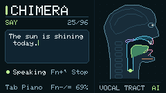

M5Stack Cardputer-Adv
CHIMERA
An offline voice synthesizer with a visible vocal tract. Type a phrase, press Enter, and watch the head animate as it speaks.

Hear Say mode
“The sun is shining today.”
Install on Cardputer-Adv
The standalone image replaces the current firmware and partition table. Back up the device before flashing.
-
Enter download mode
Turn the Cardputer-Adv off. Hold G0 while connecting it to your computer over USB.
-
Flash the firmware
Write the standalone image to offset
0x0using esptool. See the installation commands. -
Type and speak
Restart the device, type an English phrase, and press Enter. Use Fn + − to lower volume and Fn + = to raise it.